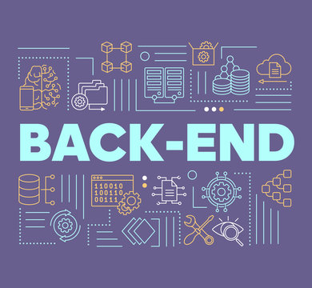

Full stack developer
MERN STACK, MEAN STACK, JAKARTA ENTERPRISE EDITION, PYTHON-DJANGO,
FULL STACK PROJECTS
Delhi, India | pandeyprince4723@gmail.com | 8920686295
MERN STACK, MEAN STACK, JAKARTA ENTERPRISE EDITION, PYTHON-DJANGO,
FULL STACK PROJECTS
Dynamic and highly motivated aspiring Full Stack Developer with a strong foundation in web development technologies and a passion for creating innovative, user-centric applications. Proficient in both front-end and back-end development, with a deep understanding of programming languages, frameworks, and design principles. Committed to continuous learning and staying up-to-date with industry trends. Strong problem-solving skills and a collaborative team player with excellent communication abilities. Eager to contribute technical expertise and creativity to a forward-thinking organization while expanding my skill set in pursuit of becoming a proficient Full Stack Developer.
Bachelor of Computer Application
Maharaja Surajmal Institute • C-4 MARKET, Fire Station Rd, Janakpuri, New Delhi, Delhi, 110058 • 2024 • GPA: 9.3
Back-End Engineering Job Simulation
Forage - Lyft • 2023
Intro to JavaScript
OpenWeaver • 2023 • front-end technologies
Made many JS projects
Intern at Forage - Lyft • September 2023 - September 2023
• Software Architecture
• Refactoring
• Unit Testing
• Test-Driven Development
C, C++, Python, Java
Familiar with networking principles and protocols
Proficient in common operating systems (e.g., Windows)
Knowledge of cloud computing concepts and platforms
Front-end Development: HTML, CSS, JavaScript, React
Back-end Development: Python (Django)
Database Management: SQL
Server Management: Express.js, Django
Version Control: Git/GitHub
Responsive Design and Cross-Browser Compatibility
UI/UX Design Principles
Problem Solving(completed dsa) and Algorithmic Thinking
Data Structures and Algorithms
Strong problem-solving abilities
Excellent teamwork and communication skills
Fast learner and adaptable
Detail-oriented and quality-focused
system design principles
Time management and project planning